vis-1-introduction.pdf
บทเรียนนี้ตอบคำถามเดียว: ทำไมเราต้องแปลงข้อมูลเป็นภาพ ทั้งที่มีสถิติสรุปอยู่แล้ว — และให้กรอบคิด 3 คำ (Effective / Convincing / Insightful) ที่วิชานี้ใช้ตลอดเทอม ในการตอบคำถามข้อสอบแบบ "วิเคราะห์ visualization ที่ให้มา" อาจารย์ยกตัวอย่างจริงมาเยอะมากในบทนี้ — ตั้งแต่โฆษณาการเมืองไทยสองพรรค ไปจนถึงเกมตัวเลขและเลขโรมัน — เนื้อหาข้างล่างนี้แนบภาพสไลด์จริงทุกภาพพร้อมอธิบาย ไม่ใช่แค่สรุปด้วยคำพูด.
วิชานี้วาง Visualization ไว้เป็นสาขาย่อยของ Visual Computing คู่กับ Computer Graphics, Image Processing, Computer Vision — สรุปละเอียดไว้ใน Reference: Visual Computing Taxonomy. อ่านสั้น ๆ ก่อนทำ quiz ข้อ 1–2 ด้านล่าง.
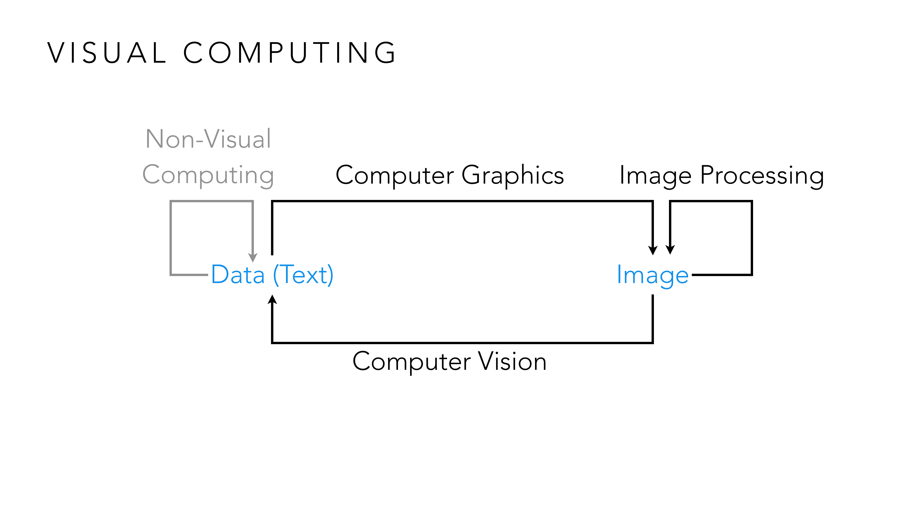
วิธีจำแนกสาขาง่ายที่สุดคือถามว่า "input กับ output เป็น data หรือ image?" แล้วดูทิศทางการแปลง: กล้องถ่ายรูป (data ตำแหน่งแสง → image) จัดเป็น Computer Graphics ไม่ใช่ Visualization เพราะเน้นความสมจริง ในขณะที่ตัวกรอง Instagram (image → image ที่ถูกปรับสี/เบลอ) คือ Image Processing ส่วนระบบสแกนใบหน้าปลดล็อกมือถือ (image → data ว่าใช่เจ้าของเครื่องไหม) คือ Computer Vision — พอเข้าใจ 3 ทิศทางนี้แล้ว จะเห็นว่า Visualization เดินทิศทางเดียวกับ Computer Graphics (data → image) ต่างกันแค่เป้าหมาย: Computer Graphics อยากให้ภาพสมจริงที่สุด ส่วน Visualization อยากให้ภาพสื่อความหมายของข้อมูลชัดที่สุด แม้จะไม่สมจริงเลยก็ตาม (เช่น bar chart ไม่ได้พยายามเลียนแบบอะไรในโลกจริง).
ก่อนจะบอกว่า visualization ดีอย่างไร อาจารย์ให้ดูตัวอย่างที่ไม่เกี่ยวกับข้อมูลเลยก่อน — เพื่อพิสูจน์หลักการที่ลึกกว่านั้น: รูปแบบการแสดงผล (representation) กำหนดว่าปัญหาเดียวกันจะคิดง่ายหรือยาก แม้เนื้อหาข้างในจะเหมือนกันทุกประการ.
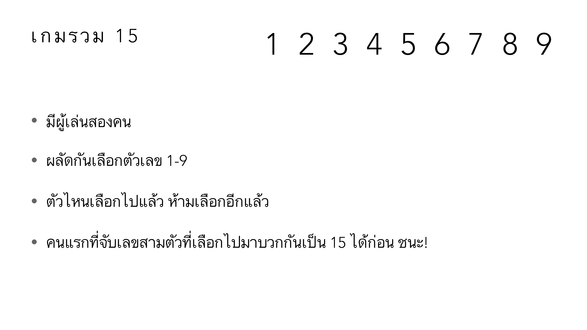
กติกาเกมนี้ดูเรียบง่ายมาก: ผู้เล่นสองคนผลัดกันเลือกตัวเลข 1-9 (เลือกไปแล้วเลือกซ้ำไม่ได้) ใครมีตัวเลขสามตัวที่รวมกันได้ 15 ก่อน ชนะ ลองเล่นในหัวดูจริง ๆ — จะรู้สึกว่าต้องคิดหนักมาก ต้องคอยคำนวณผลรวมของทุกชุดที่เป็นไปได้ตลอดเวลา ทั้งที่กติกาไม่มีอะไรซับซ้อนเลย นี่คือ "เกมเดียวกัน" กับเกม OX (tic-tac-toe) ที่ทุกคนเล่นตั้งแต่เด็กได้แบบไม่ต้องคิดเลย — ถ้าเอาตัวเลข 1-9 ไปจัดเรียงเป็นตาราง 3×3 แบบ "magic square" (แถว/คอลัมน์/แนวทแยงรวมกันได้ 15 ทุกเส้น) การเลือกเลขสามตัวรวมกันเป็น 15 จะเทียบเท่ากับการเรียงหมากสามตัวเป็นเส้นตรงในตาราง — พอเปลี่ยนจาก "ตัวเลขในหัว" เป็น "ตำแหน่งบนตาราง" สมองมนุษย์ก็มองเห็นคำตอบได้แทบจะทันที นี่คือหลักฐานตัวที่หนึ่ง: ปัญหาเดียวกันเป๊ะ เปลี่ยนแค่การแสดงผล ความยากก็เปลี่ยนจากหน้ามือเป็นหลังมือ.
อาจารย์ยกตัวอย่างที่สองย้ำหลักการเดียวกันจากประวัติศาสตร์คณิตศาสตร์:
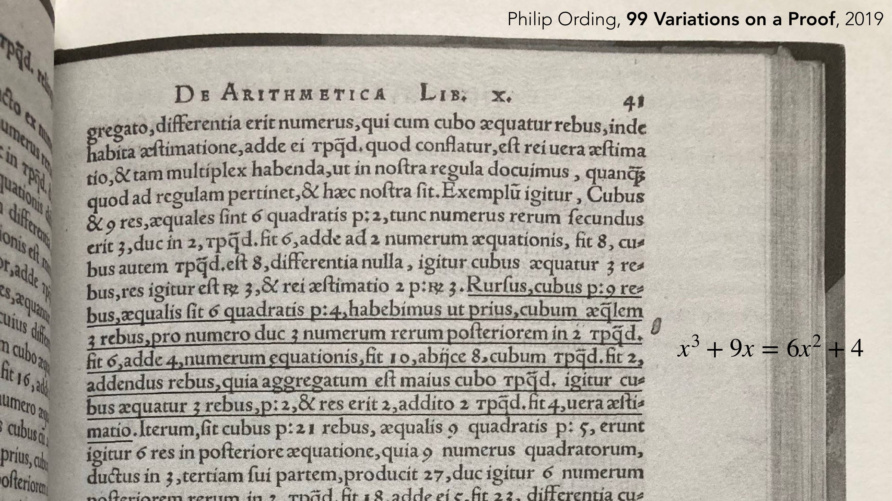
หน้าตำราคณิตศาสตร์ภาษาละตินยุคศตวรรษที่ 16 นี้ใช้ข้อความยาวเป็นย่อหน้าเพื่ออธิบายสมการกำลังสามข้อเดียว (สังเกตคำอย่าง "cubus", "quadratis", "res" ที่แทนค่า x³, x², x) เทียบกับสมการเดียวกันที่เขียนด้วยสัญกรณ์สมัยใหม่: x³ + 9x = 6x² + 4 — บรรทัดเดียวจบ ในขณะที่ต้นฉบับใช้พื้นที่เกือบเต็มหน้ากระดาษ นี่ไม่ใช่แค่เรื่อง "เขียนสั้นกว่า" — สัญกรณ์พีชคณิตสมัยใหม่ทำให้มนุษย์สามารถจัดการสมการ (ย้ายข้าง บวกลบคูณหาร) ได้ง่ายกว่าการอ่านประโยคยาว ๆ มาก การค้นพบทางคณิตศาสตร์หลายอย่างในยุคหลังเกิดขึ้นได้เพราะสัญกรณ์ดีขึ้น ไม่ใช่เพราะมนุษย์ฉลาดขึ้น.
ตัวอย่างที่สามพิสูจน์เรื่องเดียวกันด้วยตัวเลขที่จับต้องได้ที่สุด:
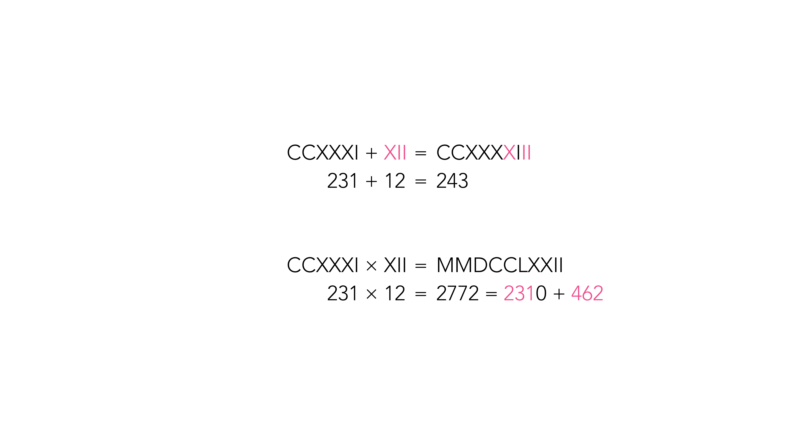
CCXXXI + XII = CCXXXXIII คือ 231 + 12 = 243 — การบวกด้วยเลขโรมันทำได้ง่าย แค่เอาสัญลักษณ์มาต่อกัน (concatenate) ไม่ต้องคิดเยอะ แต่พอเป็นการคูณ CCXXXI × XII = MMDCCLXXII คือ 231 × 12 = 2772 กลับไม่มีทริกง่าย ๆ แบบนั้นเลย ต้องแตกเป็น 2310 + 462 ก่อนแล้วค่อยบวก (ตัวเลขสีชมพูในภาพ) ซึ่งเป็นขั้นตอนที่เลขโรมันไม่มีสัญลักษณ์ช่วยให้ทำเลย ต่างจากเลขอารบิกที่มีวิธีคูณแนวตั้งที่ทำตามขั้นตอนได้เป็นกลไก (algorithm) — เหตุผลที่อารยธรรมที่ใช้เลขโรมันไม่พัฒนาคณิตศาสตร์ขั้นสูงได้เร็วเท่าที่ควร ส่วนหนึ่งเป็นเพราะตัวแทน (representation) ของตัวเลขเองไม่เอื้อให้คิดคำนวณซับซ้อนได้ — เชื่อมกลับมาที่ visualization: ถ้าการเลือก "สัญกรณ์ตัวเลข" ที่ถูกต้องเปลี่ยนสิ่งที่มนุษยชาติคิดได้ไปทั้งอารยธรรม การเลือก "ภาพ" ที่ถูกต้องมาแทนข้อมูลก็มีน้ำหนักไม่ต่างกันเลย.
Slide เสนอ 3 เหตุผลที่ visualization มีค่าเหนือกว่าตัวเลขดิบ:
| เหตุผล | กลไก | เป้าหมาย | รูปแบบผลลัพธ์ |
|---|---|---|---|
| Effective | อธิบายสิ่งที่ไม่ชัดเจนให้เห็นชัด | to explain | — |
| Convincing | Visual evidence | to explain | Narrative Visualization |
| Insightful | Visual reasoning | to explore | Visual Analytics |
สังเกตแกนสำคัญ: to explain (สื่อสารสิ่งที่รู้อยู่แล้วให้คนอื่นเข้าใจ) กับ to explore (ค้นหาสิ่งที่ยังไม่รู้) เป็นสองปลายของ spectrum เดียวกัน — Narrative Visualization อยู่ฝั่ง explain, Visual Analytics อยู่ฝั่ง explore. Data science process ทั้งหมด (data exploration → data analysis → data presentation → data storytelling) วิ่งอยู่ระหว่างสองปลายนี้.
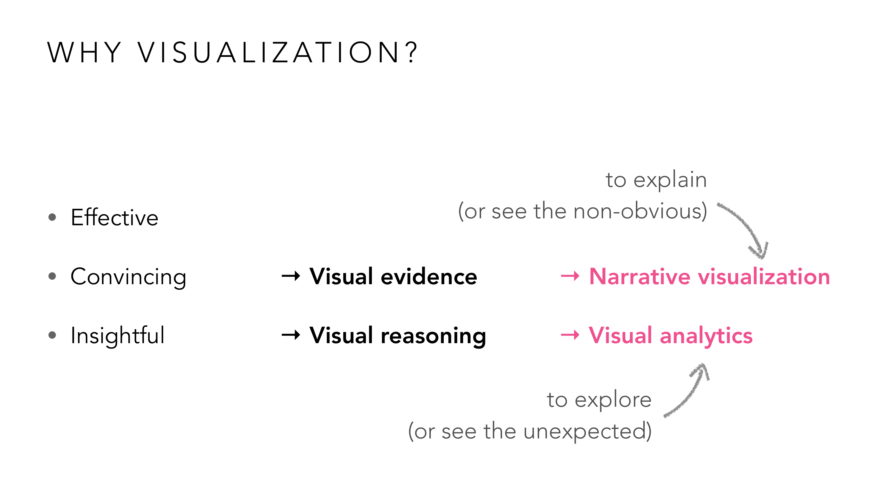
ลองใช้กรอบนี้แยกของจริง 2 แบบ: อินโฟกราฟิกข่าวที่สรุปว่า "ปีนี้ยอดขายรถ EV โตกว่าปีก่อน 3 เท่า" พร้อมกราฟแท่งประกอบ — คนทำรู้ข้อสรุปอยู่แล้ว แค่ต้องการภาพมา "ยืนยัน" ให้คนอ่านเชื่อ นี่คือฝั่ง Convincing → Visual evidence → Narrative Visualization เทียบกับ dashboard ที่นักวิเคราะห์นั่งไล่ filter กราฟไปเรื่อย ๆ เพื่อหาว่าทำไมยอดขายเดือนนี้ตก — ไม่มีใครรู้คำตอบล่วงหน้า ต้องอาศัยการมองกราฟหลายมุมเพื่อ "คิด" หาคำตอบ นี่คือฝั่ง Insightful → Visual reasoning → Visual Analytics ทั้งสองตัวอย่างต่างกันตรงที่อันแรก "รู้คำตอบแล้วเล่าให้ฟัง" (to explain) ส่วนอันหลัง "ยังไม่รู้คำตอบ ต้องหา" (to explore).
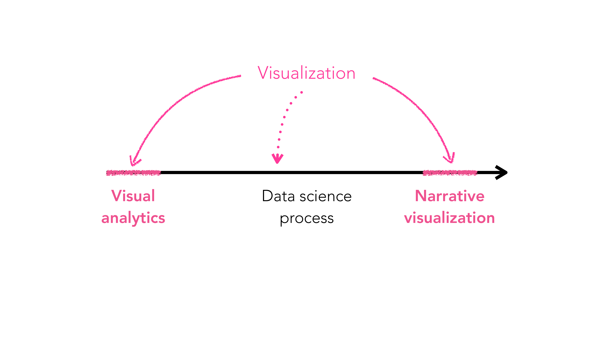
ประเด็นที่ diagram นี้เตือนไว้คือ: อย่าใช้คำว่า "visualization" กับ "data science" แทนกันเฉย ๆ — visualization เป็นแค่ขั้นตอนย่อยหนึ่งในกระบวนการทั้งหมด (data exploration → analysis → presentation → storytelling) ตัวอย่างเช่น การทำความสะอาดข้อมูล (data cleaning) หรือการรัน regression หาความสัมพันธ์ ก็เป็นส่วนหนึ่งของ data science แต่ไม่ใช่ visualization เลย เพราะยังไม่มีการแปลงเป็นภาพ — visualization เข้ามาเกี่ยวก็ต่อเมื่อถึงขั้น "presentation" (เล่าผลด้วยภาพ = narrative) หรือใช้ภาพช่วย "explore/analyze" ระหว่างทาง (= visual analytics) เท่านั้น.
Slide แนะนำคำนี้ก่อนลงลึกใน Lecture 2: คุณสมบัติภาพบางอย่าง (สี ความเข้ม ทิศทาง ขนาด) สมองมนุษย์ประมวลผลได้เร็วมากโดยไม่ต้องตั้งใจค้นหาทีละจุด — นี่คือกลไกที่ทำให้ visualization ที่ออกแบบดี "เห็นแล้วเข้าใจทันที" ตัวอย่างที่ทรงพลังที่สุดในสไลด์นี้ไม่ใช่ตัวอย่างวิชาการ แต่เป็นโฆษณาการเมืองไทยจริงจากปี พ.ศ. 2543-2544 ที่สองพรรคใหญ่ใช้กราฟห่ำหั่นกันในหน้าหนังสือพิมพ์:
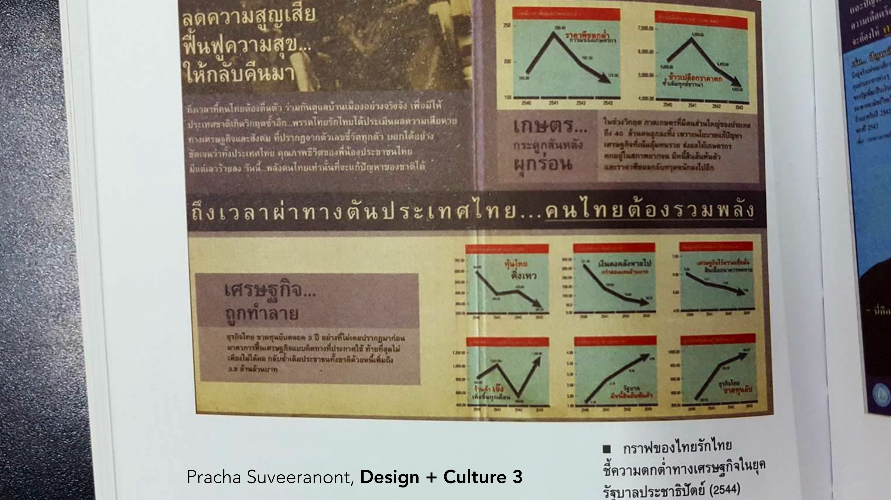
โฆษณานี้ไม่มีคำอธิบายตัวเลขละเอียดให้อ่านเลย มีแค่กราฟเส้นตัวเล็ก ๆ 8 อันที่ทุกเส้นดิ่งลงแรงพร้อมลูกศรสีแดงเข้มปลายแหลมชี้ลง ล้อมด้วยข้อความ "เศรษฐกิจ...ถูกทำลาย" — สมองมนุษย์ประมวลผล "ทิศทางลูกศรชี้ลง + สีแดง" ได้เร็วกว่าอ่านตัวเลขในกราฟทุกตัวมาก แค่กวาดตาผ่าน ก็รู้สึกว่า "ทุกอย่างกำลังพัง" ได้ทันทีโดยไม่ต้องอ่านแม้แต่คำเดียว — นี่คือ pre-attentive attribute (ทิศทางของเส้น, สี) ถูกใช้เพื่อโน้มน้าว (Convincing) ไม่ใช่เพื่ออธิบายข้อมูลตรง ๆ.
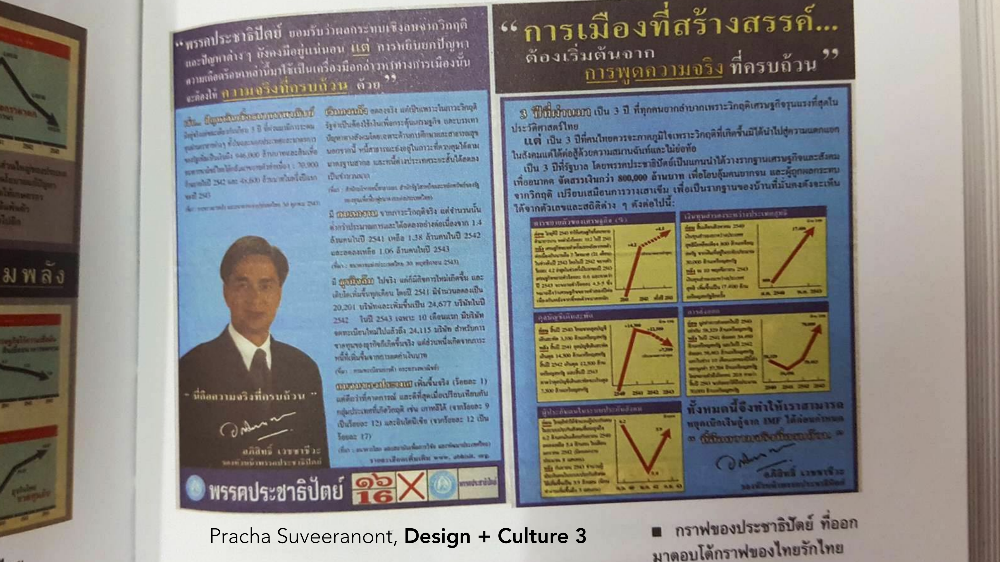
นี่คือคำตอบโต้จากอีกพรรคหนึ่ง (ประชาธิปัตย์) — ใช้กลเม็ดภาพแบบเดียวกันเป๊ะ (กราฟเส้นเล็ก ๆ พร้อมลูกศรสีแดงหนา) แต่คราวนี้ลูกศรเกือบทุกอันชี้ขึ้นแทน เพื่อเถียงว่านโยบายของพรรคตัวเองทำให้เศรษฐกิจกำลังฟื้น — สังเกตว่าทั้งสองฝ่ายไม่ได้เถียงกันด้วยตัวเลขละเอียดหรือแหล่งอ้างอิงที่ตรวจสอบง่าย แต่เถียงกันด้วย "ภาษาภาพ" ชุดเดียวกัน (เส้นกราฟ + ลูกศร + สี) เปลี่ยนแค่ทิศทางลูกศร — นี่คือตัวอย่างที่ชัดเจนที่สุดว่า pre-attentive attributes ทรงพลังแค่ไหนในการโน้มน้าวความเชื่อ และเป็นตัวอย่างเดียวกับที่ Lesson 13 (Current Issues) จะกลับมาเจาะลึกอีกครั้งในหัวข้อจริยธรรมของ visualization.
ตัวอย่างที่ทำให้ pre-attentive attributes โด่งดังระดับโลกคือกราฟ COVID-19 นี้ ที่แทบทุกประเทศนำไปใช้สื่อสารพร้อมกันในปี 2020:
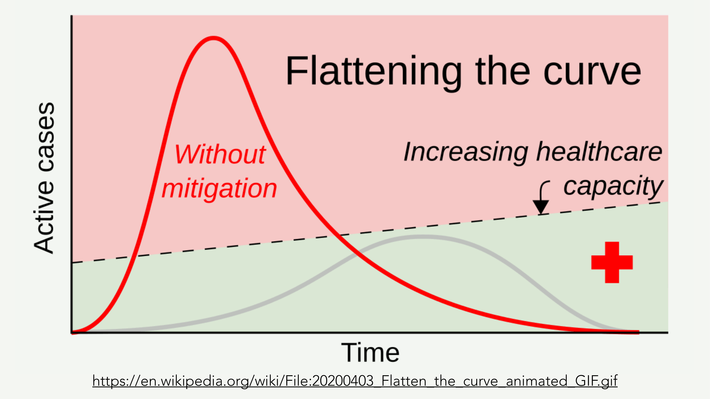
เส้นสีแดงพุ่งสูงทะลุเส้นประ "healthcare capacity" ไปไกลมาก ในขณะที่เส้นสีเทาแบนราบอยู่ใต้เส้นประตลอด — ไม่ต้องอ่านแกน x/y เลยด้วยซ้ำ แค่เห็น "รูปทรงภูเขาสูงสีแดงพุ่งทะลุเส้น" กับ "เนินเตี้ย ๆ สีเทาที่อยู่ใต้เส้น" สมองก็ตัดสินได้ทันทีว่าอันไหน "อันตราย" อันไหน "ปลอดภัย" — สี (แดง vs เทา) และความสูง/รูปทรง (แหลมพุ่ง vs แบนกว้าง) คือ pre-attentive attributes สองตัวที่ทำงานร่วมกัน ทำให้กราฟนี้กลายเป็นภาพที่คนทั้งโลกเข้าใจตรงกันได้ในเสี้ยววินาที โดยไม่ต้องมีพื้นฐานสถิติเลย.
อาจารย์เทียบให้เห็นตรง ๆ ว่าทำไมตารางตัวเลขถึงพ่ายให้กับภาพ แม้ข้อมูลจะเหมือนกันทุกตัว:
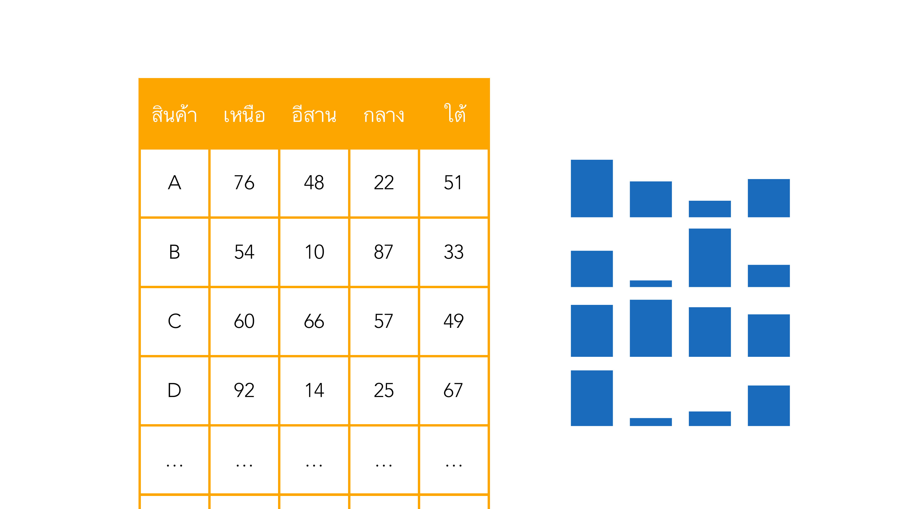
ตารางซ้ายมีข้อมูลยอดขายสินค้า A-D แยกตามภาค (เหนือ อีสาน กลาง ใต้) เช่น สินค้า A ขายภาคเหนือ 76 อีสาน 48 กลาง 22 ใต้ 51 — ถ้าอยากรู้ว่า "สินค้าไหนขายภาคกลางได้เยอะสุด" ต้องไล่อ่านตัวเลขทีละแถวในคอลัมน์ "กลาง" แล้วเทียบในใจ (22, 87, 57, 25, ...) ซึ่งใช้เวลาและทำให้พลาดง่าย เทียบกับกริดขวาที่เอาตัวเลขชุดเดียวกันเป๊ะมาวาดเป็นแท่งสีน้ำเงินสูง-ต่ำตามค่า — แค่กวาดตาไปที่แถวเดียวกัน ตาก็เห็นได้ทันทีว่าแท่งไหนสูงกว่าโดยไม่ต้องอ่านตัวเลขเลยสักตัว นี่คือเหตุผลเชิงกลไกที่สุดว่าทำไมต้อง visualize: การอ่านตัวเลขเป็น process ที่ต้องทำทีละขั้น (sequential, ใช้ working memory) ส่วนการเทียบความสูงของแท่งเป็น pre-attentive (ขนาน, แทบไม่ใช้ working memory เลย).
อีกตัวอย่างหนึ่งแสดงว่า visualization เผยรูปแบบที่ซ่อนอยู่ในข้อมูลจำนวนมหาศาลได้ ทั้งที่มองจากตัวอย่างเดี่ยว ๆ ไม่มีทางเห็นเลย:
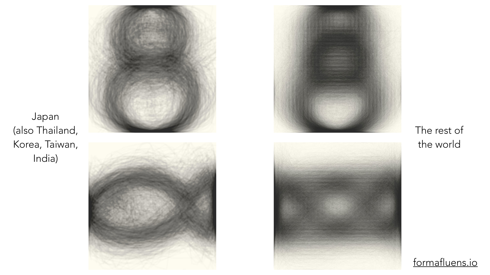
ภาพนี้เอาลายมือเขียนเลข "8" หลายพันตัวอย่างมาซ้อนทับกันเป็น density map แยกตามภูมิภาค — ฝั่งญี่ปุ่น (รวมถึงไทย เกาหลี ไต้หวัน อินเดีย) รูปร่างที่ปรากฏชัดคือ "ตุ๊กตาหิมะ" สองวงกลมซ้อนกันแยกจากกัน (คนกลุ่มนี้มักยกปากกาขึ้นระหว่างวาดวงบนกับวงล่าง) ส่วนฝั่งที่เหลือของโลก รูปร่างที่ปรากฏกลับเป็นเลข 8 ทรงโบว์ไท/เลขอนันต์ที่ลากเส้นต่อเนื่องไม่ยกปากกาเลย — ถ้าดูลายมือคนเดียวเขียนเลข 8 แค่ตัวเดียว จะไม่มีทางสังเกตความต่างเชิงวัฒนธรรมนี้ได้เลย ต้องอาศัยการซ้อนภาพนับพันตัวอย่างเข้าด้วยกันก่อน pattern ทางวัฒนธรรมนี้ถึงจะ "โผล่ขึ้นมา" ให้เห็นปุ๊บปั๊บด้วยตา — ตรงกับหลักการเดียวกับ Anscombe's Quartet ด้านล่าง: ข้อมูลดิบจำนวนมากซ่อน pattern ที่สรุปเป็นตัวเลขไม่ได้ ต้องมองเป็นภาพเท่านั้นถึงจะเห็น.
Slide ยกตัวอย่างชุดข้อมูลหลายชุดที่มี X Mean, Y Mean, X SD, Y SD, และ Correlation เหมือนกันทุกตัว แต่เมื่อ plot ออกมา รูปร่างต่างกันโดยสิ้นเชิง — บางชุดเป็นเส้นตรง บางชุดเป็นวงกลม บางชุดเป็นรูปไดโนเสาร์ (Datasaurus Dozen, Matejka & Fitzmaurice, CHI 2017) นี่คือหลักฐานที่ชัดที่สุดว่า สถิติสรุป (summary statistics) ไม่พอ — ต้องมองกราฟด้วยเสมอ.
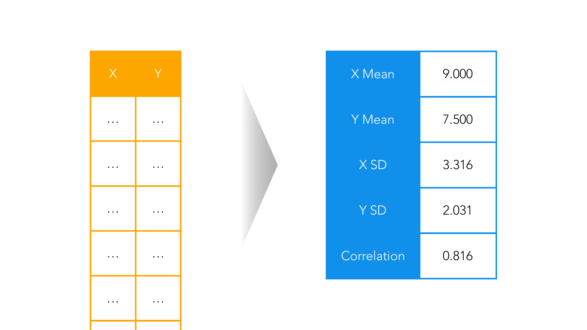
ลองสวมบทบาทเป็นคนที่เห็นแค่ตัวเลขสรุปนี้ก่อน: X Mean = 9.000, Y Mean = 7.500, X SD = 3.316, Y SD = 2.031, Correlation = 0.816 — ถ้ามีคนบอกว่านี่คือสรุปของ dataset A และ dataset B ที่ต่างกัน คุณน่าจะเดาว่าทั้งคู่ "หน้าตาคล้ายกัน" เพราะค่าสรุปเหมือนกันเป๊ะทุกตัว นี่คือกับดักที่ Datasaurus Dozen ตั้งใจสร้างขึ้น: dataset ในชุดนี้มีค่าสรุปทั้ง 5 ตัวเหมือนกันเป๊ะทุก dataset แต่พอ plot ออกมาจริง ๆ กลับได้รูปร่างต่างกันสุดขั้ว ตั้งแต่เส้นตรง วงกลม จนถึงรูปไดโนเสาร์ทั้งตัว — ข้อสอบที่ให้แค่ตารางสถิติสรุปมาแล้วถามว่า "อนุมานรูปแบบข้อมูลได้ไหม" คำตอบที่ถูกจากตัวอย่างนี้คือ "ไม่ได้" เสมอ.
อาจารย์ยกตัวอย่างจริงที่แสดงปัญหาตรงข้าม — เมื่อคนออกแบบมีข้อมูลเยอะแต่ไม่ยอมใช้ pre-attentive attribute ช่วยเลย:
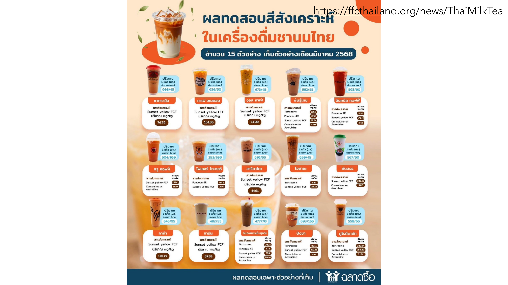
โปสเตอร์นี้ทดสอบชานมไทย 15 ยี่ห้อ แต่ละยี่ห้อมีกล่องข้อความแยกบอกชื่อสารสี (เช่น Sunset yellow FCF, Tartrazine, Ponceau 4R) พร้อมค่า mg/kg กำกับเป็นตัวเลข — ถ้าอยากรู้ว่า "ยี่ห้อไหนมีปริมาณสีสังเคราะห์สูงสุด" ต้องไล่อ่านตัวเลขทีละกล่องทั้ง 15 กล่อง เปรียบเทียบเองในใจ ไม่มี pre-attentive attribute ตัวไหนช่วยเลย (ไม่มีแท่งสูง-ต่ำ ไม่มีสีไล่ระดับตามปริมาณ มีแต่ตัวเลขในกรอบสีเดียวกันหมด) นี่คือตัวอย่างตรงข้ามกับตาราง-vs-กริดไอคอนด้านบน: ข้อมูลชุดนี้ควรถูกวาดเป็น bar chart เรียงจากมากไปน้อย (เหมือนกริดไอคอนที่เพิ่งเห็น) แต่กลับถูกนำเสนอเป็นโปสเตอร์ภาพถ่ายสวยงามที่ซ่อนตัวเลขไว้เป็นข้อความเล็ก ๆ แทน — ตัวอย่างแบบนี้คือสิ่งที่ข้อสอบ "วิเคราะห์ visualization" มักหยิบมาถาม: มีข้อมูลเปรียบเทียบได้ (comparable) แต่การออกแบบกลับไม่ช่วยให้เปรียบเทียบได้เลย.
Slide เปิดโจทย์ assignment แรกไว้: "Find & Analyze a Visualization" — หา visualization มาหนึ่งชิ้น แล้ววิเคราะห์ว่าดีหรือไม่ดี ทำไม. นี่คือแบบฝึกหัดที่ตรงกับทักษะข้อสอบ comprehensive แบบแรกในสองแบบที่คุณบอกไว้: "ให้ visualization มาวิเคราะห์" โดยตรง.
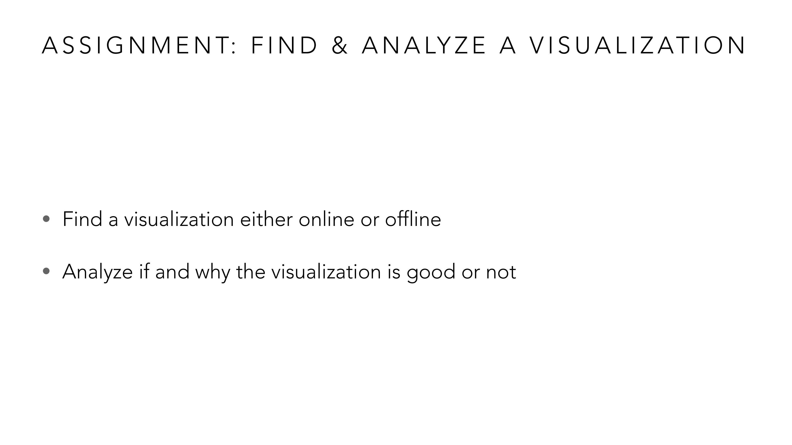
สังเกตว่าโจทย์นี้ไม่มีเกณฑ์ตายตัวให้เช็คทีละข้อ มีแค่คำถามเปิดว่า "ดีหรือไม่ดี ทำไม" — ซึ่งบังคับให้ต้องใช้กรอบคิดที่เพิ่งเรียนมาทั้งบทมาตอบเอง ไม่ใช่ท่องคำตอบสำเร็จรูป ตัวอย่างเช่น ถ้าเจอ pie chart ในข่าวที่สัดส่วนรวมกันเกิน 100% ก็ต้องรู้จักหยิบคำว่า "Convincing/Truthful" มาอธิบายว่าทำไมมันหลอกตา หรือถ้าเจอ dashboard แบบโต้ตอบได้ ก็ต้องรู้จักโยงเข้ากับ "Insightful/Visual Analytics" ว่ามันช่วยให้คนสำรวจหาคำตอบเองได้อย่างไร หรือถ้าเจอโปสเตอร์แบบชานมไข่มุกข้างบน ก็ต้องรู้จักชี้ว่าข้อมูลที่เปรียบเทียบได้ถูกซ่อนไว้ในข้อความแทนที่จะใช้ pre-attentive attribute — ฝึกแบบฝึกหัดนี้เท่ากับฝึกตอบข้อสอบ comprehensive ข้อแรกไปในตัว.
ตารางนี้ไล่ทุกหน้าของ vis-1-introduction.pdf ตั้งแต่หน้า 1 ถึงหน้าสุดท้าย เพื่อยืนยันว่าไม่มีหน้าไหนถูกข้ามไปเฉย ๆ — หน้าที่มีเครื่องหมาย ✓ คือถูกนำมาอธิบายและ/หรือใส่รูปในเนื้อหาข้างบนแล้ว ส่วนหน้าที่เหลือเป็นข้อมูลบริหารวิชา ตัวอย่างประกอบ หรือลิงก์อ้างอิงที่ไม่มีเนื้อหาเชิงทฤษฎีให้ทำ quiz เพิ่ม (etc).
| หน้า | เนื้อหา | สถานะ |
|---|---|---|
| 1 | ปกเรื่อง Visualization Introduction | etc — ปก |
| 2–3 | ผู้สอน/TA และช่องทางติดต่อ | etc — ข้อมูลบริหารวิชา |
| 4–8 | เกณฑ์ให้คะแนน, mini project, การเข้าเรียน, จรรยาบรรณ | etc — ข้อมูลบริหารวิชา (ดู MISSION.md) |
| 9 | ตารางเรียนทั้งเทอม (week 1–17) | etc — บริบทวิชา ไม่ใช่เนื้อหาสอบ |
| 10 | Visual Computing diagram | ✓ หัวข้อ 1 (มีรูป) |
| 11–13 | Visual Computing รายละเอียด + สัญลักษณ์ Data vs Visualization | ✓ ครอบคลุมแนวคิดในหัวข้อ 1 และ Reference: Visual Computing Taxonomy |
| 14 | Pre-attentive Attributes หัวข้อเกริ่นนำ | ✓ ส่วนหนึ่งของหัวข้อ 4 |
| 15 | ภาพประกอบ Flickr (pre-attentive เกริ่นนำ) | etc — ภาพประกอบ ไม่มีเนื้อหาทฤษฎีเพิ่ม |
| 16 | โฆษณาพรรคไทยรักไทย (กราฟดิ่งลง) | ✓ หัวข้อ 4 (มีรูป) |
| 17 | โฆษณาโต้ตอบพรรคประชาธิปัตย์ (กราฟพุ่งขึ้น) | ✓ หัวข้อ 4 (มีรูป) |
| 18 | (เปลี่ยนหัวข้อ ไม่มีข้อความ) | etc |
| 19 | Flatten the curve (COVID-19) | ✓ หัวข้อ 4 (มีรูป) |
| 20 | Washington Post corona simulator (ลิงก์สาธิตสด) | etc — ตัวอย่างเสริมแบบ interactive เปิดสาธิตสดในคาบ ไม่มีภาพนิ่งให้ฝัง |
| 21 | ตาราง X/Y Mean, SD, Correlation เหมือนกันทุกตัว | ✓ หัวข้อ 6 (มีรูป) |
| 22–25 | ตารางต่อ + อ้างอิง Autodesk "samestats" (Datasaurus) | ✓ ส่วนหนึ่งของหัวข้อ 6 (อ้างอิงในเนื้อหาแล้ว) |
| 26 | ตารางข้อมูล เทียบกับกริดแท่งไอคอน | ✓ หัวข้อ 5 (มีรูป) |
| 27 | formafluens.io ลายมือเลข 8 ทั่วโลก | ✓ หัวข้อ 5 (มีรูป) |
| 28 | โปสเตอร์ผลทดสอบสีสังเคราะห์ชานมไทย | ✓ หัวข้อ 7 (มีรูป) |
| 29–30 | (เปลี่ยนหัวข้อ ไม่มีข้อความ) | etc |
| 31 | เกมรวม 15 | ✓ หัวข้อ 2 (มีรูป) |
| 32 | Philip Ording, De Arithmetica (สมการยุคศตวรรษที่ 16) | ✓ หัวข้อ 2 (มีรูป) |
| 33 | (เปลี่ยนหัวข้อ ไม่มีข้อความ) | etc |
| 34 | เลขโรมัน: บวก vs คูณ | ✓ หัวข้อ 2 (มีรูป) |
| 35–36 | คำพูด Bret Victor เรื่อง representation + อ้างอิงงานวิจัย "Superpowers as Inspiration for Visualization" | ✓ สรุปแนวคิดปิดท้ายหัวข้อ 2 แล้วในเนื้อหา |
| 37 | Why Visualization? (ไอคอน Effective/Convincing/Insightful เบื้องต้น) | ✓ ส่วนหนึ่งของหัวข้อ 3 |
| 38 | กรอบคิด Why Visualization ฉบับเต็ม (to explain/to explore) | ✓ หัวข้อ 3 (มีรูป) |
| 39 | Diagram Visualization / Visual Analytics / Narrative Visualization | ✓ หัวข้อ 3 (มีรูป) |
| 40 | Data exploration / analysis / presentation / storytelling | ✓ ส่วนหนึ่งของหัวข้อ 3 (อธิบายในเนื้อหาแล้ว) |
| 41 | Assignment: Find & Analyze a Visualization | ✓ หัวข้อ 8 (มีรูป) |
| 42–54 | ตัวอย่าง visualization จริงสำหรับทำ assignment (ลิงก์ social media, งานออกแบบ, ศิลปะ) | etc — ตัวอย่างประกอบสำหรับให้นักเรียนเลือกทำการบ้านเอง (ลิงก์อ้างอิงเท่านั้น ไม่มีทฤษฎีเพิ่ม) |
| 55 | (ว่าง) | etc |
| 56 | Further Readings | etc — ดูรายการอ่านเพิ่มเติมใน RESOURCES.md แทน |
สงสัยตรงไหน ถามได้เลยในแชท — ผมเป็นผู้สอนของคุณ ถามซ้ำได้ ถามลึกได้ ไม่ต้องเกรงใจ.